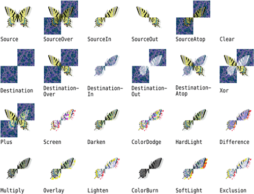

|
|
When drawing, we may be faced with a trade-off between speed and accuracy. For example, on X11 and Mac OS X, drawing on a QWidget or QPixmap relies on the platform's native paint engine. On X11, this ensures that communication with the X server is kept to a minimum; only paint commands are sent rather than actual image data. The main drawback of this approach is that Qt is limited by the platform's native support:
On X11, features such as antialiasing and support for fractional coordinates are available only if the X Render extension is present on the X server.
On Mac OS X, the native aliased graphics engine uses different algorithms for drawing polygons than X11 and Windows, with slightly different results.
When accuracy is more important than efficiency, we can draw to a QImage and copy the result onto the screen. This always uses Qt's own internal paint engine, giving identical results on all platforms. The only restriction is that the QImage on which we paint must be created with an argument of either QImage::Format_RGB32 or QImage::Format_ARGB32_Premultiplied.
The premultiplied ARGB32 format is almost identical to the conventional ARGB32 format (0xAARRGGBB), the difference being that the red, green, and blue channels are "premultiplied" with the alpha channel. This means that the RGB values, which normally range from 0x00 to 0xFF, are scaled from 0x00 to the alpha value. For example, a 50%-transparent blue color is represented as 0x7F0000FF in ARGB32 format, but 0x7F00007F in premultiplied ARGB32 format, and similarly a 75%-transparent dark green of 0x3F008000 in ARGB32 format would be 0x3F002000 in premultiplied ARGB32 format.
Let's suppose we want to use antialiasing for drawing a widget, and we want to obtain good results even on X11 systems with no X Render extension. The original paintEvent() handler, which relies on X Render for the antialiasing, might look like this:
void MyWidget::paintEvent(QPaintEvent *event)
{
QPainter painter(this);
painter.setRenderHint(QPainter::Antialiasing, true);
draw(&painter);
}
Here's how to rewrite the widget's paintEvent() function to use Qt's platform-independent graphics engine:
void MyWidget::paintEvent(QPaintEvent *event)
{
QImage image(size(), QImage::Format_ARGB32_Premultiplied);
QPainter imagePainter(&image);
imagePainter.initFrom(this);
imagePainter.setRenderHint(QPainter::Antialiasing, true);
imagePainter.eraseRect(rect());
draw(&imagePainter);
imagePainter.end();
QPainter widgetPainter(this);
widgetPainter.drawImage(0, 0, image);
}
We create a QImage of the same size as the widget in premultiplied ARGB32 format, and a QPainter to draw on the image. The initFrom() call initializes the painter's pen, background, and font based on the widget. We perform the drawing using the QPainter as usual, and at the end we reuse the QPainter object to copy the image onto the widget. This approach produces identical high-quality results on all platforms, with the exception of font rendering, which depends on the installed fonts.
One particularly powerful feature of Qt's graphics engine is its support for composition modes. These specify how a source and a destination pixel are merged together when drawing. This applies to all painting operations, including pen, brush, gradient, and image drawing.
The default composition mode is QImage::CompositionMode_SourceOver, meaning that the source pixel (the pixel we are drawing) is blended on top of the destination pixel (the existing pixel) in such a way that the alpha component of the source defines its translucency. Figure 8.13 shows the result of drawing a semi-transparent butterfly (the "source" image) on top of a checker pattern (the "destination" image) with the different modes.

Composition modes are set using QPainter::setCompositionMode(). For example, here's how to create a QImage containing the XOR of the butterfly and the checker pattern:
QImage resultImage = checkerPatternImage; QPainter painter(&resultImage); painter.setCompositionMode(QPainter::CompositionMode_Xor); painter.drawImage(0, 0, butterflyImage);
One issue to be aware of is that the QImage::CompositionMode_Xor operation also applies to the alpha channel. This means that if we XOR the color white (0xFFFFFFFF) with itself, we obtain a transparent color (0x00000000), not black (0xFF000000).
|
|
| Converted from CHM to HTML with chm2web Pro 2.85 (unicode) |